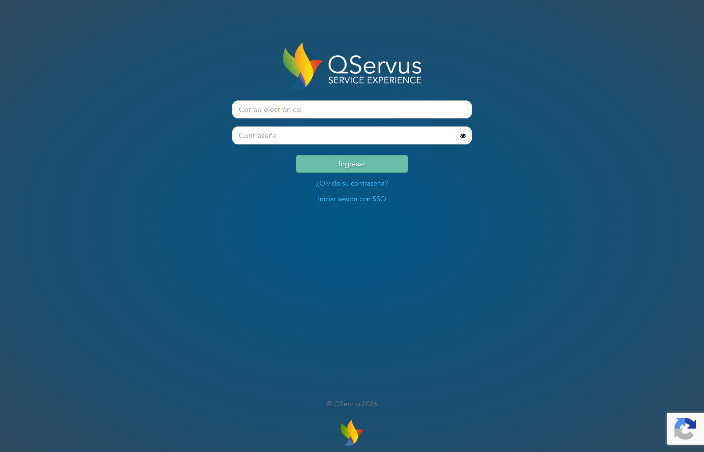

El administrador de tu organización crea tu cuenta. Al hacerlo el sistema envía automáticamente un correo a tu email con un enlace para establecer tu contraseña.
Revisa tu bandeja de entrada. Si no lo encuentras revisa la carpeta de spam. El remitente es QServus.
Haz clic en el enlace del correo. La contraseña debe cumplir los siguientes requisitos:
#$%&@!^_*.Una vez establecida la contraseña, el sistema te redirige automáticamente a la plataforma.
Ingresa directamente en:
Completa el formulario con tu correo electrónico y contraseña y haz clic en Ingresar.

La opción Iniciar sesión con SSO aparece en la pantalla de login. Permite autenticarse con las credenciales corporativas de la organización. Consulta con tu administrador si esta opción está habilitada para tu empresa.